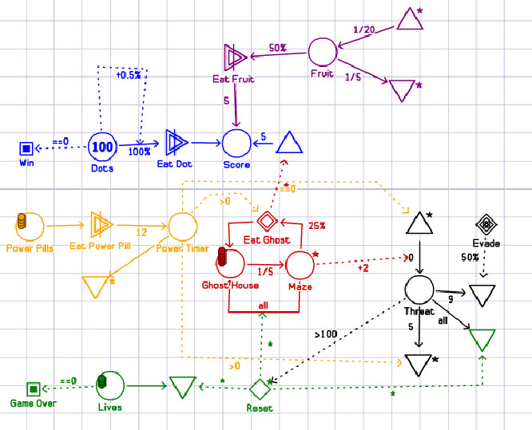
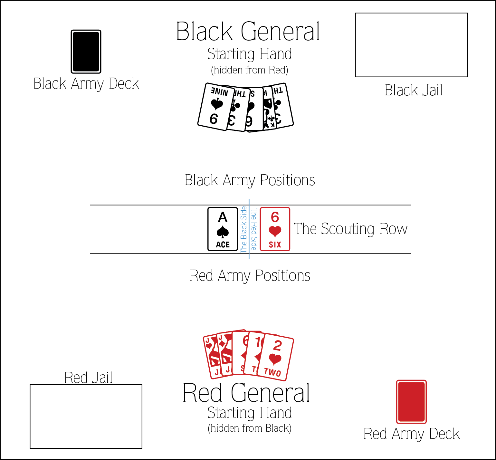

Jogos e sistemas
Leitura
Capítulo 5 “Systems” em SALEN, K.; ZIMMERMAN, E. Rules of play : game design fundamentals. Cambridge Mass.: MIT Press, 2003.
Uma definição simples de sistema seria: um grupo de elementos inter-relacionados, interdependentes ou interagindo formando um todo complexo (Salen & Zimmerman, 2003). Uma outra forma de entender sistemas seria olhar para diferentes elementos que os constituem e aplicar essa análise a partir de diferentes pontos de partida ou enquadramentos. Os elementos de um sistema são, de acordo com Littlejohn (apud Salen & Zimmerman, 2003):
- Objetos: podem ser abstratos ou concretos, mas são as partes e variáveis integrantes do sistema.
- Atributos: as propriedades e qualidades do sistema e seus objetos.
- Relações internas: é o que conecta e explica as interações entre os objetos e atributos do sistema.
- Ambiente: é o contexto externo no qual o sistema existe e que o determina de diferentes formas.
A complexidade de um sistema é dada pelo grau de inter-relação entre seus diversos elementos. Sistemas com uma relação mais interdependente são mais complexos, mesmo que modelem comportamentos simples. Outro conceito importante ao pensar sistemas é a ideia de dinâmica ou os padrões que surgem a partir desse sistema em funcionamento. Uma ferramenta interessante para visualizar dinâmicas é a Machinations. Considerar dinâmicas de forma rigorosa permite detectar furos, falhas onde os jogadores podem abusar do sistema para ganhar vantagens injustas ou indesejadas (Fullerton, 2008, p. 310).

Diagrama de Pac-Man na ferramenta Machinations.
Atividade
- Identificar sistemas nos exemplos pesquisados, pensando aspectos desses exemplos que são bem equilibrados como sistemas. Quais elementos são mais fáceis de identificar? Quais são mais vitais para o (des)equilíbrio notado?
- Conhecer o jogo Myre, de Zach Gage, explicando regras. A análise do equilíbrio vai ficar para semana que vem, quando faremos análise dele e de um sistema em jogo digital simples.

Mesa do jogo Myre.
Exercício
Criar um jogo simples de combate entre dois jogadores, usando como objetos apenas um baralho tradicional, 2 dados de 6 faces e, se necessário, peças para pontos. As partidas devem ter no máximo 20 a 30 minutos.